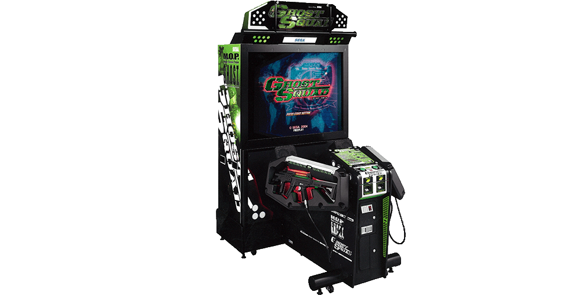
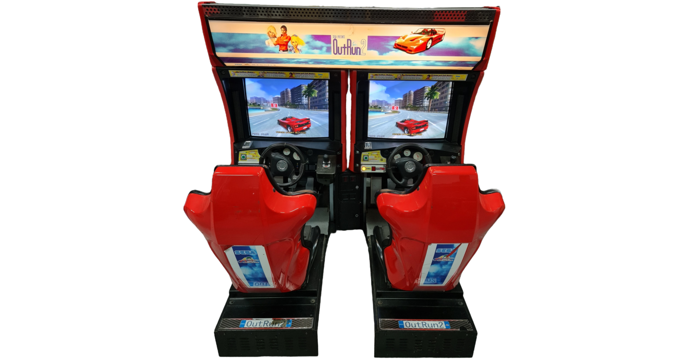
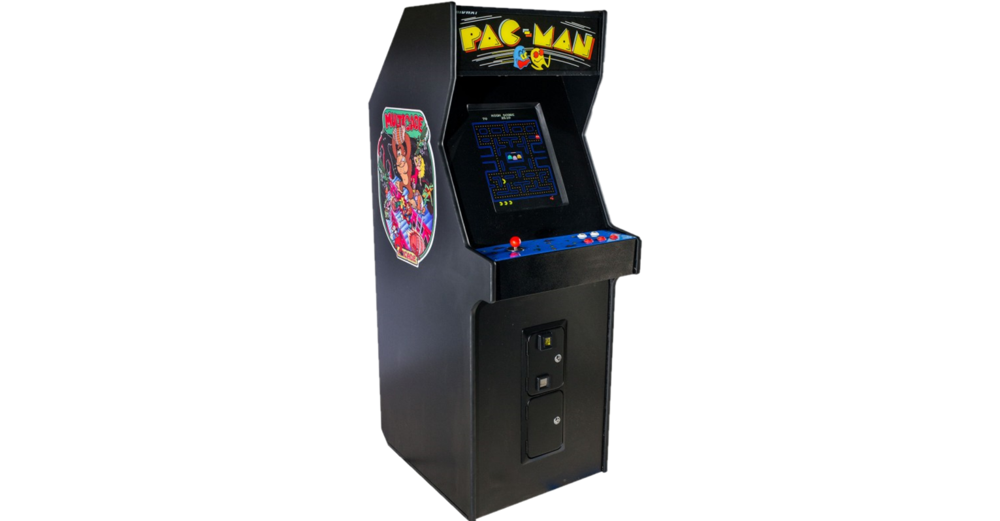
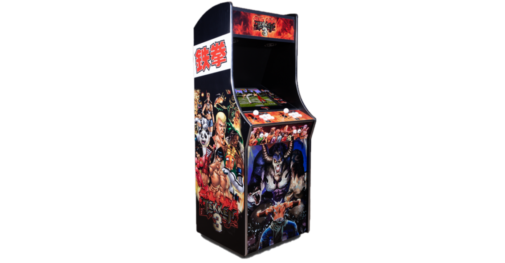
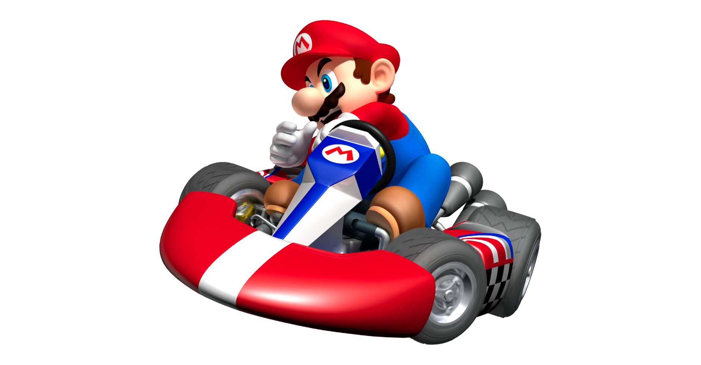
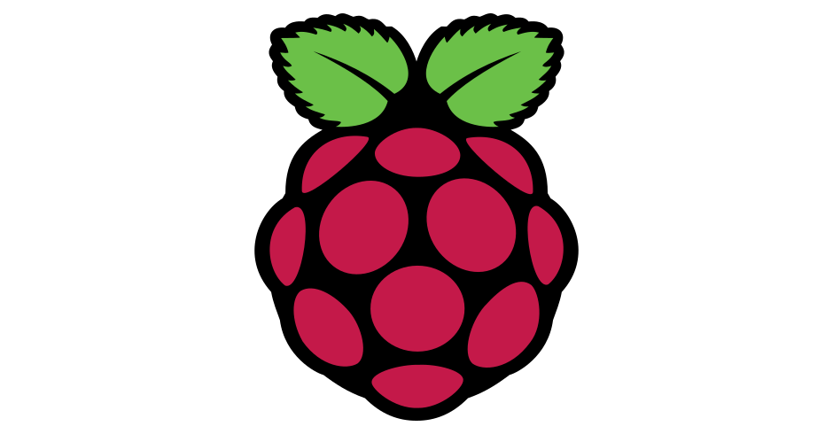

Come down and play some of our great retro arcade machines! Go head to head on Outrun 2 or Tekken, team up on Ghost Squad, get nostalgic with 80s classics like Space Invaders or Pacman or try our huge range of console games!





